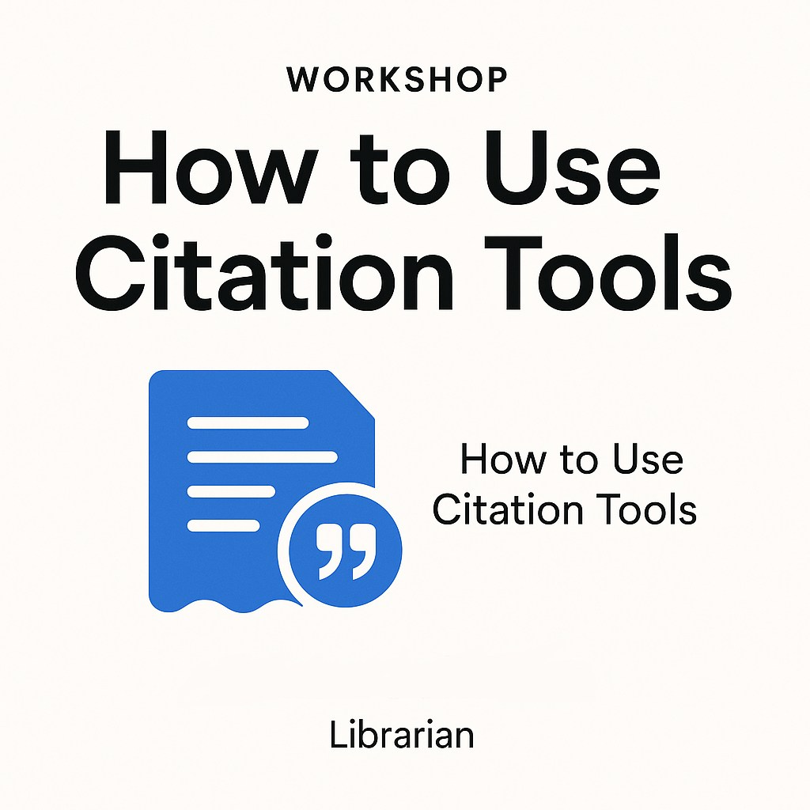
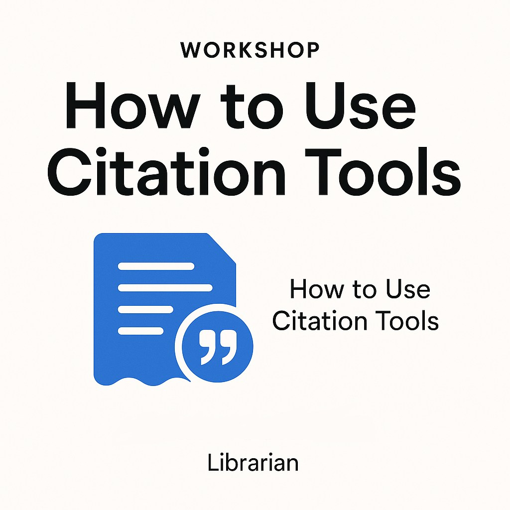

Welcome to Vocational College Tawau Library
A space where knowledge is sown to brighten the future.
See Latest News & AnnouncementsWebsite Objectives & Reflection
Introduction & Objectives
The main objective of this website is to serve as a digital hub for Vocational College Tawau Library, providing easy access to information, resources, and services for students and teachers. The website aims to encourage lifelong reading habits, promote digital literacy, and make library resources accessible at any time.
Advantages
- Centralized access to news, catalogs, and user services
- Improves communication between library and users
- Promotes learning and self-service for students
- Enables online reservations and renewals for convenience
 
